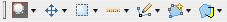
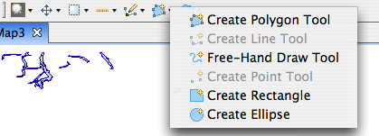

Tools are used to manipulate the map. Depending on the current tool the map will behave in a completly different manner.

The current tool is indicated by a shaded background, tools are grouped according to the following categories (hotkey in brackets):
Additional tools are available in each category, press the small triangle to see additional tools:

The keyboard short-cuts can be used to switch between tool categories, and to cycle through tools within a category.
(c) Copyright (c) 2004,2005 Refractions Research Inc. and others.